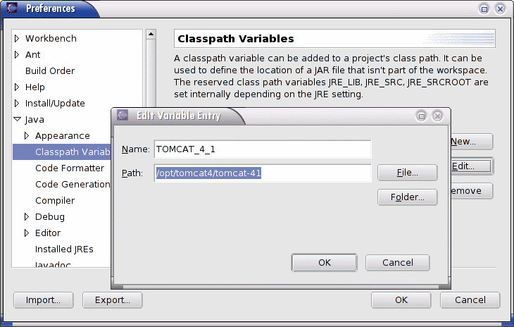
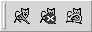
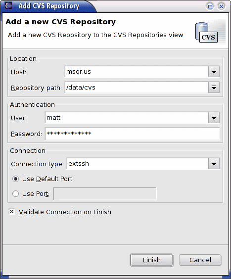
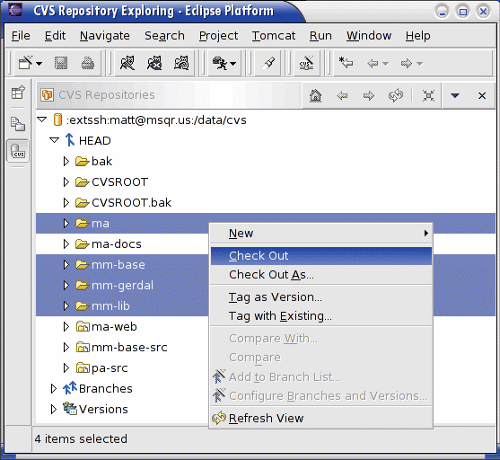

Media Album: Developer Jumpstart with Eclipse
Note: you could easily use different components than I list here,
for example JBoss instead of Tomcat or vi instead of Eclipse. The
documentation presented here is only a guideline, based on my own development
with Media Album.
Media Album utilizes many open source libraries and tools. For developers, this makes working
with the code very easy and in most cases you can develop on Linux, Windows, and Mac OS X
simultaneously without any difficulty. The open source IDE Eclipse
(
http://www.eclipse.org/)
is a full-featured IDE that works well as a development environment for Media Album, since
it uses other open source technologies that are integrated into Eclipse and makes development
easier.
Get Developer Components
To set up your development environment, you need to have the following components:
| Component |
Version |
Description |
Eclipse
http://www.eclipse.org/ |
2.1.x or 3.0 |
Eclipse is an open source IDE originally released by IBM.
At the time of this writing, Eclipse 2.1.2 is the official release, but the
Eclipse 3.0 milestone builds have been stable enough for development and offer
enhanced features that are quite nice. I recommend using the latest milestone
available (M7 at this time). Just download the appropriate version for your
operating system. Follow the instructions that
come with Eclipse to install it.
|
Java2 SDK
http://java.sun.com/ |
1.4.2 |
You need the Java SDK (JDK) to develop Java code. Any Java 2 SDK version
should work, but I have only tested with 1.3.x and 1.4.x. Follow the instructions
that come with the SDK to install it.
|
PostgreSQL
http://www.postgresql.org/ |
7.x |
This is the database back-end that Media Album uses. It is possible to
develop using a different RDBMS, but I have only tested with PostgreSQL.
Media Album only uses ANSI SQL, so plugging in a different RDBMS should
be as simple as obtaining the proper JDBC driver and porting the
PostgreSQL database creation scripts to that database platform. If
anyone else develops these scripts I'd be more than happy to include
them into the Media Album source!
|
Sysdeo Tomcat Plugin
http://www.sysdeo.com/eclipse/tomcatPlugin.html |
2.2.1 |
This Eclipse plugin allows Tomcat to be controlled from within Eclipse. This allows you
to use the Eclipse debugger for servlet code. After you download the plugin, move it
into the Eclipse plugin directory.
|
Tomcat
http://jakarta.apache.org/tomcat/ |
4.1.x |
Tomcat is the Java servlet/JSP application server used by the Media Album.
At the time of this writing the current release in the 4.1 series is 4.1.30.
You should be able to use any 4.1.x release or even the 5.x releases. Download
the binary release and follow the instructions that come with Tomcat to install it.
|
Initial Eclipse Configuration
There are a few configuration items you should change when you start Eclipse for
the first time. If you've already been using Eclipse, it might help to double
check these settings.
Configure extra CVS ASCII file types
There are some file types that Eclipse will not immediately treat as regular text
when using CVS. Since CVS needs to be told whether to treat a file as text or as
binary data, this is important. In Eclipse, navigate to
Window > Preferences > Team > File Content. You can add new
file types by clicking the Add... button; new types are by default added
as text type. Add the following file extensions if they are not already listed:
Turn on CVS label decorations
The CVS label decorations help you to see the CVS status of files in Eclipse,
e.g. changed, saved, etc. To turn them on, navigate to
Window > Preferences > Workbench > Label Decorations
and check the CVS checkbox.
Enable CVS compression
Enabling CVS compression can help speed up checking in/out code.
Go to Window > Preferences > Workbench > Team > CVS
and set the Compression level to 7 or higher.
Set up classpath variables
Eclipse lets you set up classpath variables which make it easier
to set up the classpath for your Eclipse projects later on. In the case of Media Album,
we'll make use of many Tomcat classes, so it makes sense to add a Tomcat classpath
variable. Navigate to
Window > Preferences > Java > Classpath Variables
and click the New... button. Create the following variables:
| Name | Directory | Example |
| TOMCAT_4_1 |
The root directory of your Tomcat 4.1 installation. |
/opt/java/jakarta-tomcat-4.1 |

Setting up the TOMCAT_4_1 classpath variable.
Customize Eclipse Java perspective
I find it helpful to add the Tomcat tools to the Java
perspective in Eclipse, which will allow you to
start, stop, and restart Tomcat. To do this, make sure you
are in the Java perspective (Window > Open Perspective
> Java) and then navigate to the Window >
Customize Perspetive... menu. Open the Other
category from the left and check the Tomcat option.
Once you've done this, you should see three Tomcat buttons
while in the Java perspective like this:

Tomcat buttons in Eclipse: Start, Stop, Restart.
Set up CVS Projects in Eclipse
Eclipse uses a multi-mode UI, which they call Perspectives. A Perspective in Eclipse is
designed to facilitate one particular set of related tasks. For example, there is a Java
Perspective which focuses on writing Java code, a Debug Perspective which focuses on
debugging, and a CVS Perspective for managing CVS repositories. When you first start up
Eclipse you'll be in the Resource Perspective, which is more or less just a view of your
file system.
Media Album uses CVS as its code repository. Eclipse has CVS support built in,
and makes working with CVS a breeze.
Go to CVS perspective
Navigate to Window > Open Perspective > Other...
and You'll get a dialog with a list of possible Perspectives. Choose the
CVS Repository Exploring Perspective.
Add New Repository
Right-click in the CVS Repositories pane and select
New > Repository Location... .
This will bring up the Add CVS Repository dialog.
Fill in CVS information
For the connection type,
ext may be used as long
as you configure Eclipse and/or your shell to use
ssh
for CVS's ext connection. Doing this allows you to use
regular CVS clients in addition to Eclipse (as it seems only
Eclipse understands the
extssh syntax). To get
this to work in Unix, export an environment
variable named
CVS_RSH with a value of
ssh.
For example, in sh-derived shells, you could add the following to
your
.profile shell script:
export CVS_RSH=ssh
Fill in the following information for the CVS server:
| Host |
msqr.us |
| Repository path |
/data/cvs |
| User |
username |
| Password |
password |
| Connection type |
extssh |

Setting up CVS repository
Checkout CVS Modules
Now you're ready to check out the modules into Eclipse projects.
You'll need to check out at least the following modules:
- ma
- mm-base
- mm-gerdal
- mm-lib
In addition you might want to also check out the documentation
module: ma-docs. This is not required to develop
Media Album, but contains useful documentation.
Select the modules to check out, right-click, and
select Check out.

Checking out Media Album modules from CVS
It could take a while for everything to download, please be
patient.
Configure Tomcat
There are several configuration settings you must perform
on Tomcat to get Media Album running within Eclipse.
Add Sysdeo DevLoader to Tomcat
In order to easily debug within Eclipse, the DevLoader
classloader that comes with the Sysdeo Eclipse plugin
should be installed into Tomcat. To do this simply
locate the DevLoader zip file in the Eclipse directory:
plugins/com.sysdeo.eclipse.tomcat_2.2.1/DevLoader.zip.
Unzip this into the Tomcat server/classes
directory (create the classes directory if
it does not exist already).
Configure DataSource
You must configure a DataSource for Media Album to connect
to the database. First copy the PostgreSQL JDBC JAR
(mm-lib/pg73jdbc2.jar) into the Tomcat
common/lib directory. If you're using a
different version of PostgreSQL than the one supported
by this JDBC driver, or a different database, you'll need
to copy the proper JDBC JAR file into this directory.
Secondly you need to configure the DataSource properties
in Tomcat's conf/server.xml file. I usually
configure the DataSources as global resources, then use
a ResourceLink within the Media Album
Context to refer to the DataSource. This
is because the Media Album application expects the
DataSource to be available at jdbc/ma
but you might want to use a different JNDI name. The
name value does not matter as long as you
use the same value here and in the ResourceLink
configuration. Here is an example configuration:
<GlobalNamingResources>
<Resource name="jdbc/ma/local"
type="javax.sql.DataSource" scope="Shareable"/>
<ResourceParams name="jdbc/ma/local">
<parameter>
<name>validationQuery</name>
<value>select data_value from test where key = 0</value>
</parameter>
<parameter>
<name>maxWait</name>
<value>5000</value>
</parameter>
<parameter>
<name>maxActive</name>
<value>4</value>
</parameter>
<parameter>
<name>password</name>
<value>mmagoffin</value>
</parameter>
<parameter>
<name>url</name>
<value>jdbc:postgresql://localhost:5432/ma</value>
</parameter>
<parameter>
<name>driverClassName</name>
<value>org.postgresql.Driver</value>
</parameter>
<parameter>
<name>maxIdle</name>
<value>2</value>
</parameter>
<parameter>
<name>username</name>
<value>mmagoffin</value>
</parameter>
</ResourceParams>
</GlobalNamingResources>
Configure Media Album Context
Now configure the Media Album context in Tomcat. Make sure
the docBase points to the ma/web
directory from the Eclipse ma project. Media
Album requires two resources:
| mail/ma |
javax.mail.Session |
| jdbc/ma |
javax.sql.DataSource |
Here is an example configuration (note the global
attribute of the DataSource resource link matches the global
resource configured earlier):
<Context className="org.apache.catalina.core.StandardContext"
crossContext="false" reloadable="false"
mapperClass="org.apache.catalina.core.StandardContextMapper"
useNaming="true" debug="0" swallowOutput="false" privileged="false" displayName="Media Album"
wrapperClass="org.apache.catalina.core.StandardWrapper"
docBase="/opt/ma/web" cookies="true" path="/ma" cachingAllowed="true"
charsetMapperClass="org.apache.catalina.util.CharsetMapper">
<Logger className="org.apache.catalina.logger.SystemOutLogger" verbosity="4" timestamp="true"/>
<Loader className="org.apache.catalina.loader.DevLoader" reloadable="true" debug="1"/>
<Resource name="mail/ma" auth="Container" type="javax.mail.Session"/>
<ResourceParams name="mail/ma">
<parameter>
<name>mail.smtp.host</name>
<value>localhost</value>
</parameter>
</ResourceParams>
<ResourceLink name="jdbc/ma" type="javax.sql.DataSource" global="jdbc/ma/local"/>
</Context>
Configure Tomcat Manager user
In order for Eclipse to start and stop Tomcat, the Tomcat
manager webapp that comes with Tomcat must be
installed and a Tomcat user must be set up for accessing
it. Edit the Tomcat conf/tomcat-users.xml
file to add a manager group and a user
in this group. Here is an example configuration which
will create a user admin with password
admin that has the proper access:
<tomcat-users>
<role rolename="manager"/>
<role rolename="admin"/>
<user username="admin" password="admin" roles="admin,manager"/>
</tomcat-users>
Add Xalan as endorsed JAR
Tomcat configures Xerces as an endorsed JAR, but
Xalan sometimes have problems running with Xerces
when Xerces is endorsed and Xalan is not. Thus I
add Xalan as an endorsed JAR to Tomcat instead of
putting it in the webapp's classpath. To do this
copy the mm-lib/xalan-2.6.0/xalan.jar
to the Tomcat common/endorsed
directory. You may want to also replace the Xerces
version already there with a newer one if it
is available (either from mm-lib
or from Apache's Xerces website).
Setup Sysdeo Tomcat plugin
You'll need to configure the Sysdeo Tomcat plugin so that you
can run Media Album within Eclipse. To do this, navigate to
Window > Preferences > Tomcat and configure
the settings according to your Tomcat installation.
Under the Window > Preferences > Tomcat > Source Path
panel make sure you check the three source projects for Media Album:
ma, mm-base, and mm-gerdal. This
will allow for debugging of the code.
Under the Window > Preferences > Tomcat > Tomcat Manager App
fill in the settings used by your Tomcat installation, using the
username and password you set up previously with access to the manager
webapp. For example:
| ManagerApp url |
http://localhost:8080/manager |
| ManagerApp username |
admin |
| ManagerApp password |
admin |
Configure PostgreSQL
This guide assumes you are familiar with PostgreSQL and already
have it installed and running on your system. You'll need to
create a database for Media Album to use, and also configure
PostgreSQL to accept TCP/IP connections to work with JDBC.
Test setup with sandbox database
If you want only to test out that your setup is working,
you can set up a DataSource in Tomcat that points to the sandbox
database on msqr.us. The DataSource settings are:
| JDBC URL |
jdbc:postgresql://msqr.us:5432/matest |
| Username |
matest |
| Password |
matest |
| Validation Query |
select data_value from test where key = 0 |
Create Media Album user and database
You do not have to create a new database user to use with
Media Album if you already have a user you'd like to use.
On a Unix system, the commands would look something like
this (this is assuming the commands are run as a PostgreSQL
user that can create users and databases):
Welcome to psql, the PostgreSQL interactive terminal.
Type: \copyright for distribution terms
\h for help with SQL commands
\? for help on internal slash commands
\g or terminate with semicolon to execute query
\q to quit
template1=# create user ma with encrypted password 'ma'
template1=# nocreatedb nocreateuser;
CREATE USER
template1=# create database ma with owner ma;
CREATE DATABASE
template1=# \q
Depending on your configuration of PostgreSQL, you might
need to add an entry to the pg_hba.conf security file to
allow the user ma to connect to the ma
database. For example, the following line added to
pg_hba.conf will allow any local user to connect via
TCP/IP by supplying the correct password:
host ma 127.0.0.1 255.255.255.255 md5
Since JDBC uses TCP/IP to connecto to PostgreSQL, you
must enable TCP/IP connections for PostgreSQL. This
is done by adding the -i argument to the
postmaster when starting up.
Create database tables
Now you're ready to create the database tables in the
ma database. You should create these tables
as the ma user so that user is the owner of
the tables. Using psql again, execute the
ma/scripts/sql/create-newdb-tables-pg.sql and
ma/scripts/sql/create-tables-pg.sql scripts,
for example:
$ psql -h localhost -U ma ma
Password:
Welcome to psql, the PostgreSQL interactive terminal.
Type: \copyright for distribution terms
\h for help with SQL commands
\? for help on internal slash commands
\g or terminate with semicolon to execute query
\q to quit
ma=> \i scripts/sql/create-newdb-tables-pg.sql
psql:scripts/sql/create-newdb-tables-pg.sql:36: NOTICE:
CREATE TABLE / PRIMARY KEY will create implicit index
'serial_nums_pkey' for table 'serial_nums'
CREATE TABLE
psql:scripts/sql/create-newdb-tables-pg.sql:47: NOTICE:
CREATE TABLE / PRIMARY KEY will create implicit index
'test_pkey' for table 'test'
CREATE TABLE
INSERT 33799 1
ma=> \i scripts/sql/create-tables-pg.sql
psql:scripts/sql/create-tables-pg.sql:37: NOTICE:
CREATE TABLE / PRIMARY KEY will create implicit index
'pa_meta_data_pkey' for table 'pa_meta_data'
CREATE TABLE
INSERT 33959 1
INSERT 33960 1
<...>
CREATE TABLE
INSERT 34116 1
INSERT 34117 1
INSERT 34118 1
INSERT 34119 1
INSERT 34120 1
INSERT 34121 1
INSERT 34122 1
ma=>
The example output above is truncated for brevity. You should
look over the output thouroughly to see if any errors occured.
Any NOTICE level messages PostgreSQL prints out are
to be expected, but there should not be any WARNING
or ERROR messages.
Configure local application development properties
The ma/properties-env/local directory will be
configured as part of the classpath for the ma
project in Eclipse. This allows each developer to have
different settings to control the file locations and
other runtime options for Media Album. When you initially
check out the ma project from CVS there will
only be a README.txt file. You need to copy all
the files from ma/properties-env/example
into ma/properties-env/local.
You shouldn't need to change most of the values in these
files, but here are some that you probably will need to
alter:
environment.properties
| Property |
Description |
Example |
base.file.path.www |
The base directory where the project web
files are located, e.g. ma/web.
This directory will be used for uploading
theme web files.
|
/projects/ma/www |
base.file.path.app |
The base directory where the project JSP
files are located, e.g. ma/web.
This directory will be used for uploading
theme XSL files. In many cases this will
be the same as the base www file path
from above, but could be moved somewhere
if you want to keep the web and application
content seperate.
|
/projects/ma/www |
base.file.path.collection |
The base directory where the media
collections will be located. This is where
all media items will be stored.
|
/projects/ma/collections |
base.file.path.media.cache |
The base directory where media item
cache files will be stored.
|
/projects/ma/cache |
mail.from |
The email address emails will be sent from.
|
media.album@msqr.us |
log4j-config.xml
This file is used to configure the Log4j settings, and should be
customized to log according to your needs. Here are some
noteworthy log categories you might want to change:
- root
-
Turn this to
debug to enable very verbose
logging. This is nice for development but slows the
application down considerably.
- magoffin.matt.gerdal.dao
-
The DAO classes perform quite a bit of logging, so
setting this to
warn is usually
desireable.
- magoffin.matt.gerdal.dao.BaseRdbDAO.SQL
-
This category logs out the SQL statements being
performed at an
info level, and
is useful during development.
- magoffin.matt.gerdal.dataobjects
-
The data object classes can perform quite a bit
of logging, so turning this to
warn
is usually desireable.
- magoffin.matt.pa.servlet.Xform
-
Setting this category to
debug
will log out complete DOM objects, which is
very useful during development.
- magoffin.matt.pa.servlet.MediaServer
-
This servlet is quite verbose, so setting
this to
warn is usually desirable.
- magoffin.matt.pa.servlet.MediaServer.profiler
-
This category logs profile information at
the
info level. This is
informative for logging the performance of
the MediaServer servlet.
Start Tomcat
Everything should finally be configured to run Media Album within Eclipse!
Use the Sysdeo Tomcat buttons to start Eclipse, and monitor
the application logs to look for any errors. Assuming everything
starts up OK, go to the URL you configured for Media Album,
for example
http://localhost:8080/ma/
and log in with the initial admin account, username
admin
and password
admin.
$Id: dev-jumpstart.html,v 1.1 2007/01/08 04:39:03 matt Exp $